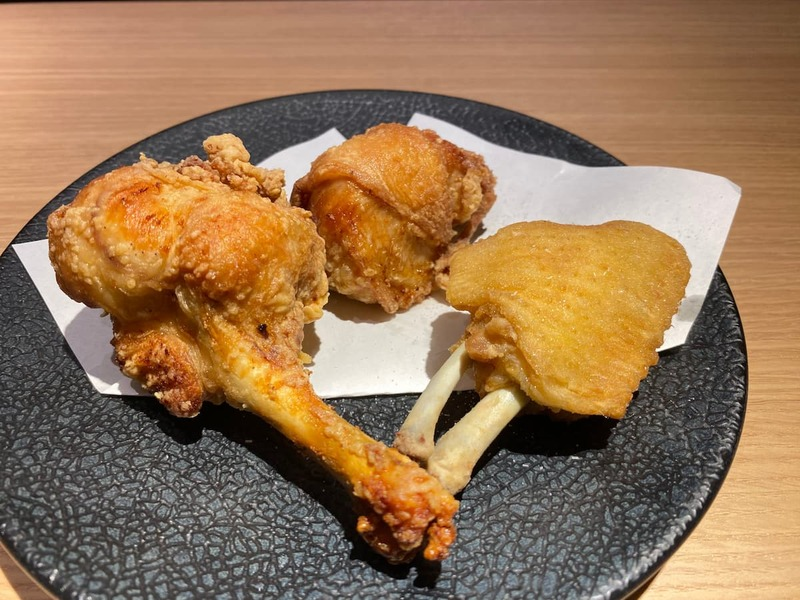
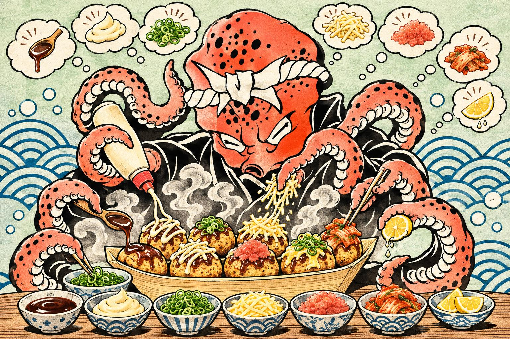

「たこ焼き」は“ふわとろ”な食感と、そのまま食べても美味しい「だし」にこだわりました。生地には昆布をベースにカツオを加えた合わせ出汁を使用。あっさりながらも旨味が感じられる本場の味わい！


手羽元、手羽先、むね肉の三部位を使用。手羽先、手羽元は身をギュッと先端に寄せ、むね肉は厚くカットすることで、秘伝のだしを身にたっぷり含ませ、ジューシーな仕上がりに。


タコの旨味がしみ出したダシでじっくり煮込んだ、心も体も温まるタコだしおでん。たこ焼きの前につまむも良し。食べ終わっただしに、たこ焼きをつけるとなお良し。




入社わずか1ヶ月で新業態の立ち上げメンバーに抜擢。全メニューの考案を担い、ゼロからブランドを築き上げた立役者。異色の元SEとしての分析力と、圧倒的な食べ歩き経験を武器に、唯一無二の味と楽しさを追求し続けている。
“たこ焼き”立ち上げ奮闘記（note）バスケ強豪校出身のゴリゴリ体育会系。明るい接客と、部活で鍛えた抜群のリーダーシップでチームをぐいぐい引っ張る頼れる存在。店長・川崎と二人三脚で現場を盛り上げ、元気と笑顔があふれる店づくりを全力で進行中！
 TEL 03-6275-6730
新メニューあるで
TEL 03-6275-6730
新メニューあるで